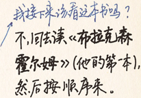
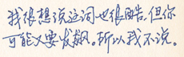
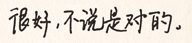
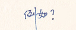
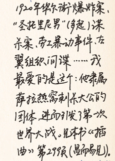
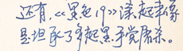
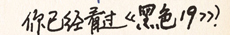
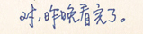

或者甚至是法国考古学家、妇女参政论者兼小说家
（雅玛杭特•狄虹）。
3
3 关于狄虹的推测特别愚蠢。凡是至今可取得的证据都显示石察卡是男性。
有些号称严谨的人提出了玄秘出身的说法：得到十四世纪修女口谕的小女孩！来自某个遥远星球的古代纳斯卡王！欧嘉女大公，遭谋杀前后都在写作！以及其他谬论：一名凶狠的塞尔维亚民族主义分子，只知其外号叫“阿匹斯神的抄缮官”！几乎可以确定为虚构的“最后一个西班牙海盗”胡安•布拉斯•科瓦鲁维亚斯！那百万只闻名遐迩的打字猴！这些全都不值一哂。
我没有兴趣争辩哪个石察卡的“可能人选”概率最大（无论是看似可信、异想天开或其他）。我不知道他的本名、出生地或母语为何，不知道他的身高、体重、地址、工作经历，或旅游路径，（不知道他是否犯下过任何一桩他曾被指控的非法、破坏或暴力恶行。）我不在乎其他人认为他是谁或对他
有何看法。
4
4 我认为他是危险人物吗？也许吧，假如你为他带来危险的话。

      